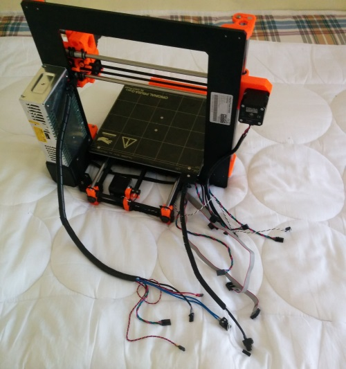
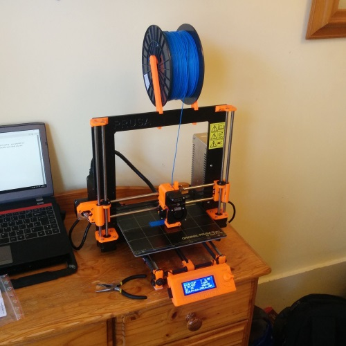
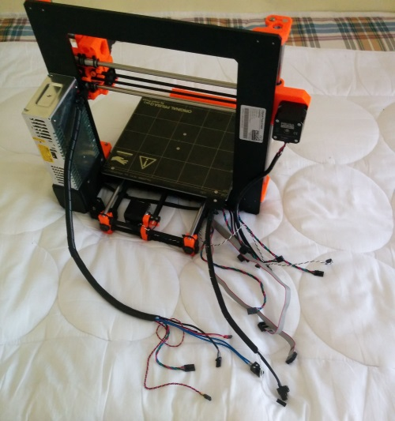
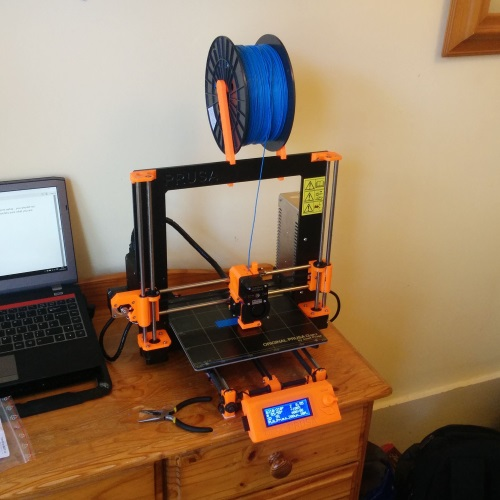

Back to Projects Index
Prusa Research - Prusa i3 MK2 - July 2016
After significant research, I decided to build a Prusa i3 design. Initially I looked at assembling a printer from parts (Ebay, naturally), but after an email conversation with Prusa Research, the original designer of the i3, I ordered a kit for their newly released MK2 printer. Assembling the kit was mostly painless, with Prusa's 24/7 live support chat proving very helpful
 



in September, I endeavoured to build an enclosure for the printer. I had found that with PLA, there were no issues with prints warping or with printbed adherance. With ABS prints however, these issues caused three-quarters of prints to fail. # I realised that as the printer was set up on a table by a window, and there was a draft passing across the printer. To remedy this, I planned to build an enclosure for the printer. It was around this time that I learned of OctoPrint, and I loved the concept, so I set up an octoprint instance running on a Raspberry Pi 3.